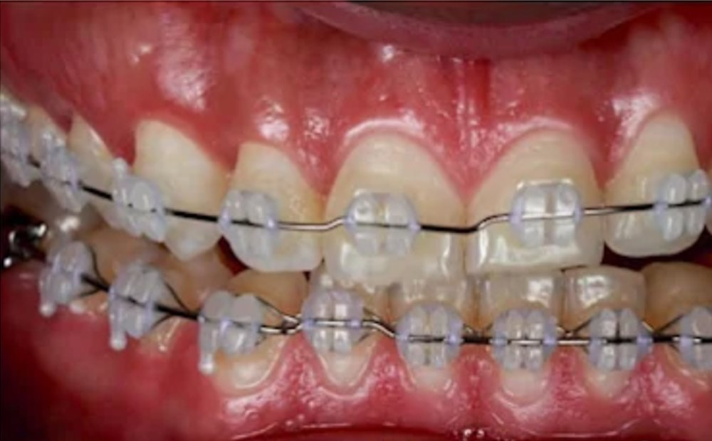
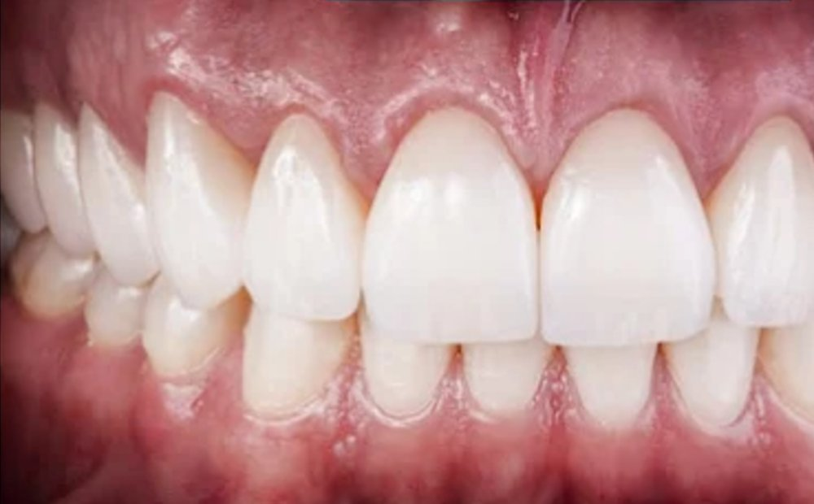

01Ortodoncia y rehabilitación
De brackets a la boca terminada. El consultorio archivó el caso como rehabilitación: la ortodoncia fue el camino, no el final. Las dos fotos son suyas, de días distintos, y van enteras y del mismo tamaño.
Material del consultorio · archivo EOL

